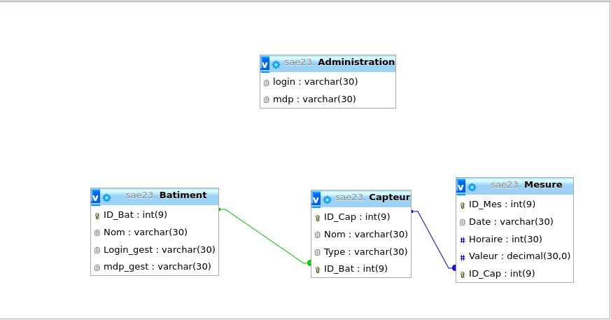

La solution php consiste à créer une base de données et les faires apparaître dans un site web dynamique.
Pour réaliser cela, en premier nous avons récupéré les données grâce à un script bash et MQTT, donc grâce au système de souscrition à des broker.
Nous avons ensuite utiliser pour stocker les données une base de données MySQL, voici une capture du shéma de la base de donnée.
Pour finir, nous avons un dernier scripte bash qui permet de placer les données dans un tableau sur les différentes pages de ce site, grâce à du code en PHP